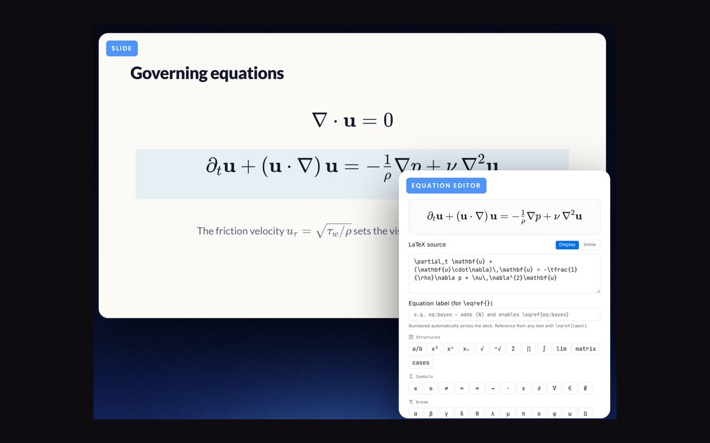

Sovereign AI for expert work.
The company I co-founded with Francesco D'Afiero. We build local models that stay with the people who own the knowledge, and software made natively for them, so the expert keeps the data, the model and the decision.
Research runs on equations, data and figures. Every tool in the chain flattens them.
The equation ends up as a screenshot in the slides. The figure loses the data behind it. A month later nobody can say which script produced which plot. Mama's Brain started from that frustration, in a PhD at KTH.
The rule is simple: if you cannot edit it or argue with it, we have not finished building it. And the knowledge should not have to leave home to be useful: the aim is AI that runs on your own machines, tuned to your field.

Two tools, one chain.
slAIdes
A presentation editor for technical talks. Equations stay editable LaTeX, charts keep their data and tables have formulas. The assistant, miniME, turns a paper into an editable talk, and every change is a revision you can inspect and undo. $1.99 per month.
EasyPlotter
Reproducible scientific figures. A figure is a recipe of typed commands that reads VTK, HDF5, CSV, NumPy and Excel, and exports PNG or matplotlib and pgfplots code. Send it to slAIdes and the chart arrives with its data.